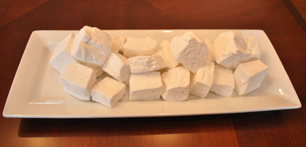

Special Treats for Valentine's Day
Remember that we have lots of small items (in addition to complete party fare) that our catering staff can provide. One of our most popular items this seasons has been our delicious home-made marshmellows. These confectionary delights are made with our own homemade vanilla and are dusted with powered sugar. They make wonderful gourmet s'mores, but are at their best floating on top of a cup of rich hot cocoa.
| Marshmallow Flavors and Prices | ||
|  | Vanilla | $6.00/dozen |
| Chocolate | $7.00/dozen | |
| Peppermint | $8.00/dozen | |
| Swirl | $8.00/dozen | |
| Orders must be placed 24 hours in advance. | ||